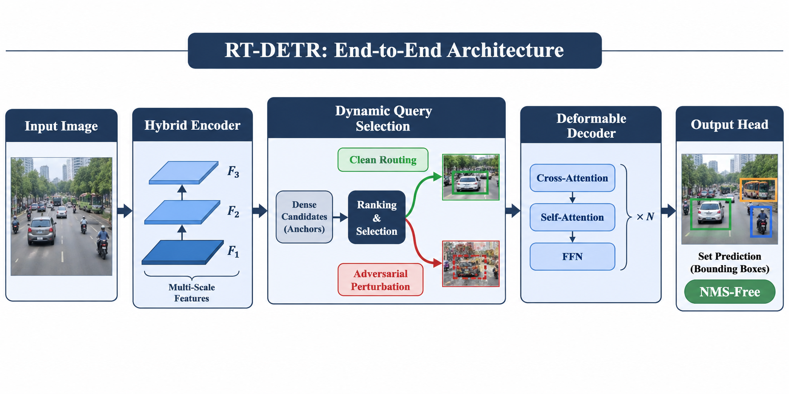
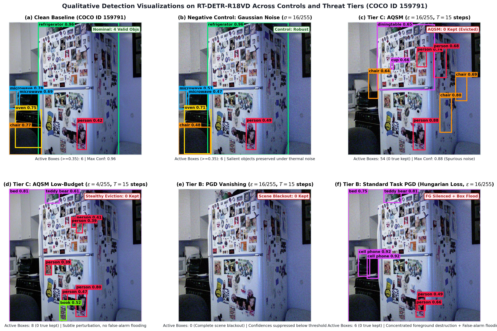
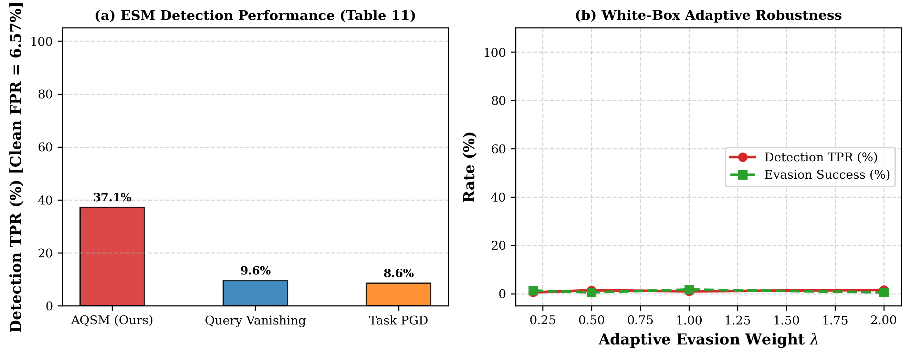

Decomposing Failure Modes of Real-Time DETR under Encoder Adversarial Attacks
An Empirical Diagnostic Study with Counterfactual 2×2 Tensor-Swap Interventions, Geometric Telemetry, and Physical Edge Profiling on COCO val2017.
1 School of Information and Communication Technology, Hanoi University of Science and Technology (HUST)
2 Department of Computer Engineering, Hanoi University of Science and Technology (HUST)
* Corresponding author: anh.lv210034@sis.hust.edu.vn
Methodological Scoping & Attribution Boundaries:
The 61.78% / 38.22% ratio represents an empirical allocation under our specific 2×2 interventional tensor-swap protocol rather than a universal natural causal constant. Because grafted hybrid arms (Arm C & Arm D) place intermediate representations in out-of-distribution (OOD) states, part of the degradation reflects cross-module representation mismatch. Furthermore, paired statistical tests are evaluated on an internal per-image diagnostic metric ($AP_i$, unweighted macro-average over present classes), which is distinct from standard corpus-pooled COCO mAP. Both metrics independently confirm that encoder memory damage is the primary driver while query eviction is an essential secondary channel.
The Encoder-Decoder Query Selection Bottleneck
RT-DETR evaluates $S = 8,400$ candidate anchors across multi-scale feature maps ($S_3, S_4, S_5$) and dynamically selects the top $N_q = 300$ highest-confidence proposals to initialize decoder content queries and reference coordinates.

2×2 Factorial Activation Patching on COCO val2017
By surgically swapping memory ($M$) and query ($Q$) representations across clean and adversarial optimization passes, we quantify their isolated and joint contributions to detector failure.
| Treatment Condition / Arm | Encoder Memory ($M$) | Query Prior ($Q$) | COCO mAP@50 | mAP@50:95 | Relative Retention |
|---|---|---|---|---|---|
| Arm A: Clean Baseline | Clean | Clean (300) | 65.50% | 48.89% | 100.0% |
| Arm B: Joint AQSM Attack | Adversarial | Adversarial (300) | 3.07% | 1.61% | 4.69% |
| Arm C: Adv Memory + Clean Query | Adversarial | Clean (300) | 7.45% | 4.09% | 11.37% |
| Arm D: Clean Memory + Adv Query | Clean | Adversarial (300) | 26.58% | 18.42% | 40.58% |
| Arm D_index: Clean Memory + Adv Index | Clean | Clean Feat + Adv Index | 35.44% | 24.81% | 54.11% |
Linear ANOVA vs Shapley Attribution
Evaluated across $N_{\mathrm{valid}} = 992$ images on per-image Average Precision ($AP_i$). Sequential attribution reveals order sensitivity ($77.75\%$ memory-first vs.\ $45.81\%$ query-first), whose symmetric 2-player Shapley attribution yields:
Multiplicative Log-Retention Law
Evaluating single-factor retentions relative to clean baseline ($Y_{00} = 65.50\%$): $$\text{Ret}_M = 11.37\%, \quad \text{Ret}_Q = 40.58\%, \quad \text{Ret}_B = 4.69\%$$ The product matches combined retention with under 0.1% absolute error:
Why Proposals Fail: Misrouting, Not Attention Scattering
Fine-grained telemetry resolves prevailing misconceptions: attention weights remain sharp, but reference coordinates are geometrically misdirected into background clutter.

Attention Weights Do Not Disperse
Normalized deformable attention entropy remains stable ($0.8009 \to 0.7944, d = -0.13$). Sampling weights remain localized around reference points rather than scattering.
Spatial Target Misrouting
Initial reference coordinates undergo geometric translation ($\Delta_{\mathrm{Hungarian}} = 0.2258$), clustering tightly into non-object boundaries ($\text{ANND} = 0.0161$), pulling anchor foreground hit rate down from $68.93\%$ to $45.13\%$.
TOST Equivalence to Uniform Sampling
A formal Two One-Sided Tests (TOST) procedure confirms equivalence of post-attack anchor hits ($45.13\%$) to uniform grid chance ($44.26\%$, $p_{\mathrm{TOST}} = 0.0373 < 0.05$ under $\pm 2.0$ pp bound) while firmly rejecting camera center priors ($p < 10^{-20}$).
Qualitative Detection Comparisons
Contrasting Clean Nominal Detections, Task PGD Proposal Flooding, and AQSM Stealthy Spatial Misrouting across COCO val2017 scenes.

AQSM silently evicts genuine foreground bounding boxes into background clutter while maintaining a sparse footprint ($7.15 \pm 4.30$ boxes, $+2.63$ over clean $4.52$), avoiding the conspicuous box flooding of Task PGD ($29.40 \pm 8.70$ boxes, $+550\%$).
Deterministic O(1) Edge Execution
Benchmarked across 300 synchronized iterations on Raspberry Pi 5 (ARM Cortex-A76) and NVIDIA Jetson Orin Nano (Ampere GPU).
NVIDIA Jetson Orin Nano
TensorRT 8.6.2 FP16 (20W MAXN)Raspberry Pi 5 (CPU Edge)
ONNX Runtime 1.16.3 FP32 (4 Threads)Static Query Augmentation (SQA)
Drawing inspiration from DINO, SQA augments the nominal dynamic top-300 queries with $N_{\mathrm{static}} = 30$ deterministic canvas grid anchors ($N_q = 330$), bypassing encoder classification ranking entirely.
- Stationary AQSM Recovery: Lifts mAP@50 from $3.41\%$ to $18.42\%$ ($+15.01$ pp recovery) by sampling outside localized gradient hotspots.
- Zero Retraining & Minimal Overhead: Operates zero-shot with only $+0.38$ ms latency overhead ($+2.68\%$) on Jetson Orin Nano.
- Adaptive Evasion Boundary: Suppressed to $4.35\%$ under joint white-box optimization, confirming that query diversification cannot substitute for representation hardening.

Automated Data Provenance & Verification Suite
Every numerical figure, ANOVA F-statistic, BCa bootstrap interval, and TOST p-value reported in the manuscript is cryptographically linked to its underlying execution JSON artifact via our automated provenance manifest.
BibTeX Citation
@article{le2026decomposing,
title = {Decomposing Failure Modes of Real-Time DETR under Encoder Adversarial Attacks: An Empirical Diagnostic Study},
author = {Le, Viet-Anh and Dao, Thuy-Quynh Thi and Nguyen, Trong-Khanh},
journal = {Engineering Applications of Artificial Intelligence (Elsevier EAAI)},
year = {2026},
publisher = {Elsevier},
url = {https://vietanhlee.github.io/AI_TrustWorthy/}
}